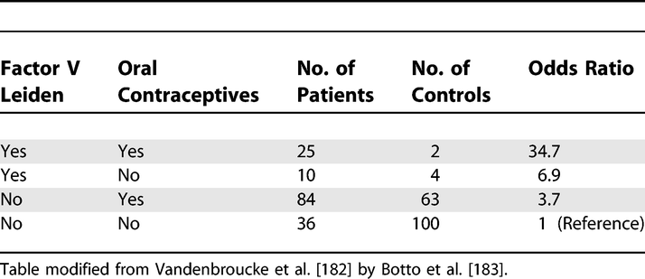
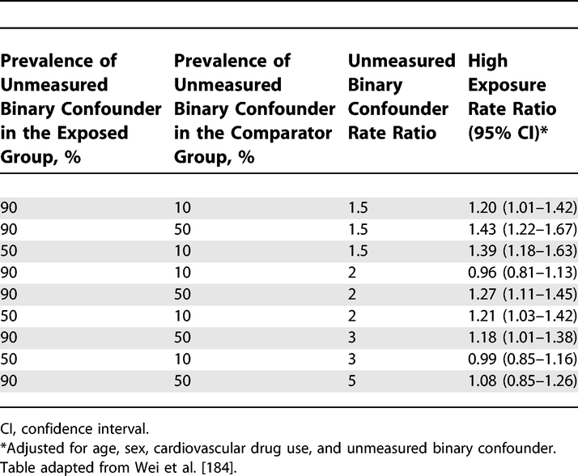

Results: Other Analyses (17)
The items from STROBE state that you should report:
- Report other analyses done e.g., analyses of subgroups and interactions, and sensitivity analyses
Some key items to consider adding:
- Consider performing analyses to explore possible effect modification
- Consider performing sensitivity/robustness analyses for differing definitions of exposure and outcome or different statistical models
- If detailed results are available elsewhere, state how they can be accessed
- Report exclusion of misreporters, outliers, and data imputation
Explanation
In addition to the main analysis other analyses are often done in observational studies. They may address specific subgroups, the potential interaction between risk factors, the calculation of attributable risks, or use alternative definitions of study variables in sensitivity analyses.
There is debate about the dangers associated with subgroup analyses, and multiplicity of analyses in general. (Gotzsche, 2006; Pocock et al., 2004) In our opinion, there is too great a tendency to look for evidence of subgroup-specific associations, or effect-measure modification, when overall results appear to suggest little or no effect. On the other hand, there is value in exploring whether an overall association appears consistent across several, preferably pre-specified subgroups especially when a study is large enough to have sufficient data in each subgroup. A second area of debate is about interesting subgroups that arose during the data analysis. They might be important findings, but might also arise by chance. Some argue that it is neither possible nor necessary to inform the reader about all subgroup analyses done as future analyses of other data will tell to what extent the early exciting findings stand the test of time. (Rothman, 1990) We advise authors to report which analyses were planned, and which were not (see also items 4, 12b and 20). This will allow readers to judge the implications of multiplicity, taking into account the study’s position on the continuum from discovery to verification or refutation.
A third area of debate is how joint effects and interactions between risk factors should be evaluated: on additive or multiplicative scales, or should the scale be determined by the statistical model that fits best (see also item 12b and box 8)? A sensible approach is to report the separate effect of each exposure as well as the joint effect – if possible in a table, as in the first example above,[183] or in the study by Martinelli et al. (Martinelli et al., 2003) Such a table gives the reader sufficient information to evaluate additive as well as multiplicative interaction (how these calculations are done is shown in box 8).
Confidence intervals for separate and joint effects may help the reader to judge the strength of the data. In addition, confidence intervals around measures of interaction, such as the Relative Excess Risk from Interaction (RERI) relate to tests of interaction or homogeneity tests. One recurrent problem is that authors use comparisons of P values across subgroups, which lead to erroneous claims about an effect modifier. For instance, a statistically significant association in one category (eg, men), but not in the other (eg, women) does not in itself provide evidence of effect modification. Similarly, the confidence intervals for each point estimate are sometimes inappropriately used to infer that there is no interaction whintervals overlap. A more valid inference is achieved by directly evaluating whether the magnitude of an association differs across subgroups.
Sensitivity analyses are helpful to investigate the influence of choices made in the statistical analysis, or to investigate the robustness of the findings to missing data or possible biases (see also item 12b). Judgement is needed regarding the level of reporting of such analyses. If many sensitivity analyses were performed, it may be impractical to present detailed findings for them all. It may sometimes be sufficient to report that sensitivity analyses were carried out and that they were consistent with the main results presented. Detailed presentation is more appropriate if the issue investigated is of major concern, or if effect estimates vary considerably.(Anderson et al., 2005; Kyzas et al., 2005) Pocock and colleagues found that 43 out of 73 articles reporting observational studies contained subgroup analyses. The majority claimed differences across groups but only eight articles reported a formal evaluation of interaction (see item 12b).(Pocock et al., 2004; Vandenbroucke et al., 2007)
Examples
Example 1

Analysis of Oral Contraceptive Use, Presence of Factor V Leiden Allele, and Risk for Venous Thromboembolism
https://doi.org/10.1371/journal.pmed.0040297.t009
Example 2

Sensitivity of the Rate Ratio for Cardiovascular Outcome to an Unmeasured Confounder
https://doi.org/10.1371/journal.pmed.0040297.t010
Box 8. Interaction (effect modification)
- The analysis of joint effects
Interaction exists when the association of an exposure with the risk of disease differs in the presence of another exposure. One problem in evaluating and reporting interactions is that the effect of an exposure can be measured in two ways: as a relative risk (or rate ratio) or as a risk difference (or rate difference). The use of the relative risk leads to a multiplicative model, while the use of the risk difference corresponds to an additive model (Rothman et al., 1980; Saracci, 1980). A distinction is sometimes made between ‘statistical interaction’ which can be a departure from either a multiplicative or additive model, and ‘biologic interaction’ which is measured by departure from an additive model (Rothman, 2002). However, neither additive nor multiplicative models point to a particular biologic mechanism. Regardless of the model choice, the main objective is to understand how the joint effect of two exposures differs from their separate effects (in the absence of the other exposure). The Human Genomic Epidemiology Network (HuGENet) proposed a lay-out for transparent presentation of separate and joint effects that permits evaluation of different types of interaction (Botto & Khoury, 2001). Data from the study on oral contraceptives and factor V Leiden mutation (Vandenbroucke et al., 1994) were used to explain the proposal, and this example is also used in item 17. Oral contraceptives and factor V Leiden mutation each increase the risk of venous thrombosis; their separate and joint effects can be calculated from the 2 by 4 table (see example 1 for [item 17) where the odds ratio of 1 denotes the baseline of women without Factor V Leiden who do not use oral contraceptives.
A difficulty is that some study designs, such as case-control studies, and several statistical models, such as logistic or Cox regression models, estimate relative risks (or rate ratios) and intrinsically lead to multiplicative modelling. In these instances, relative risks can be translated to an additive scale. In example 1 of item 17, the separate odds ratios are 3.7 and 6.9; the joint odds ratio is 34.7. When these data are analysed under a multiplicative model, a joint odds ratio of 25.7 is expected (3.7 × 6.9). The observed joint effect of 34.7 is 1.4 times greater than expected on a multiplicative scale (34.7/25.7). This quantity (1.4) is the odds ratio of the multiplicative interaction. It would be equal to the antilog of the estimated interaction coefficient from a logistic regression model. Under an additive model the joint odds ratio is expected to be 9.6 (3.7 + 6.9 – 1). The observed joint effect departs strongly from additivity: the difference is 25.1 (34.7 – 9.6). When odds ratios are interpreted as relative risks (or rate ratios), the latter quantity (25.1) is the Relative Excess Risk from Interaction (RERI) (K. J. Rothman et al., 1998a). This can be understood more easily when imagining that the reference value (equivalent to OR=1) represents a baseline incidence of venous thrombosis of, say, 1/10 000 women-years, which then increases in the presence of separate and joint exposures.
Field-specific guidance
Anti-microbial stewardship programs (Tacconelli et al., 2016)
- Report subgroup analysis by type of patients and type of microorganism, if applicable
Genetic association studies (Little et al., 2009)
- If numerous genetic exposures (genetic variants) were examined, summarize results from all analyses undertaken
Response-driven sampling (White et al., 2015)
- Report other analyses done—for example, analyses of subgroups and interactions, sensitivity analyses, different RDS estimators and definitions of personal network size
References
Anderson, H. R., Atkinson, R. W., Peacock, J. L., Sweeting, M. J., & Marston, L. (2005). Ambient Particulate Matter and Health Effects: Publication Bias in Studies of Short-Term Associations. Epidemiology, 16(2), 155–163. https://www.jstor.org/stable/20486022
Botto, L. D., & Khoury, M. J. (2001). Commentary: Facing the challenge of the gene-environment interaction: The two-by-four table and beyond. American Journal of Epidemiology, 153(10), 1016–1020. https://doi.org/10.1093/aje/153.10.1016
Gotzsche, P. (2006). Believability of relative risks and odds ratios in abstracts: Cross sectional study. BMJ, 333, 231–234. https://www.bmj.com/content/333/7561/231?etoc%253E=
Kyzas, P. A., Loizou, K. T., & Ioannidis, J. P. A. (2005). Selective Reporting Biases in Cancer Prognostic Factor Studies. JNCI: Journal of the National Cancer Institute, 97(14), 1043–1055. https://academic.oup.com/jnci/article/97/14/1043/2521306
Little, J., Higgins, J. P. T., Ioannidis, J. P. A., Moher, D., Gagnon, F., Elm, E. von, Khoury, M. J., Cohen, B., Davey-Smith, G., Grimshaw, J., Scheet, P., Gwinn, M., Williamson, R. E., Zou, G. Y., Hutchings, K., Johnson, C. Y., Tait, V., Wiens, M., Golding, J., … Birkett, N. (2009). STrengthening the REporting of Genetic Association Studies (STREGA)— An Extension of the STROBE Statement. PLOS Med, 6(2), e1000022. https://doi.org/10.1371/journal.pmed.1000022
Martinelli, I., Taioli, E., Battaglioli, T., Podda, G. M., Passamonti, S. M., Pedotti, P., & Mannucci, P. M. (2003). Risk of Venous Thromboembolism After Air Travel: Interaction With Thrombophilia and Oral Contraceptives. Archives of Internal Medicine, 163(22), 2771–2774. https://doi.org/10.1001/archinte.163.22.2771
Pocock, S. J., Collier, T. J., Dandreo, K. J., Stavola, B. L. de, Goldman, M. B., Kalish, L. A., Kasten, L. E., & McCormack, V. A. (2004). Issues in the reporting of epidemiological studies: A survey of recent practice. The BMJ, 329(7471), 883. https://doi.org/10.1136/bmj.38250.571088.55
Rothman, K. (2002). An introduction. In Epidemiology (pp. 168–180). Oxford University Press.
Rothman, K. J. (1990). No Adjustments Are Needed for Multiple Comparisons. Epidemiology, 1(1), 43–46. https://www.jstor.org/stable/20065622
Rothman, K. J., Greenland, S., & Walker, A. M. (1980). Concepts of interaction. American Journal of Epidemiology, 112(4), 467–470. https://doi.org/10.1093/oxfordjournals.aje.a113015
Rothman, K. J., Lash, T. L., & Greenland, S. (1998a). Interactions between causes. In Modern Epidemiology (pp. 147–161). Little Brown.
Saracci, R. (1980). INTERACTION AND SYNERGISM. American Journal of Epidemiology, 112(4), 465–466. https://doi.org/10.1093/oxfordjournals.aje.a113014
Tacconelli, E., Cataldo, M. A., Paul, M., Leibovici, L., Kluytmans, J., Schröder, W., Foschi, F., Angelis, G. D., Waure, C. D., Cadeddu, C., Mutters, N. T., Gastmeier, P., & Cookson, B. (2016). STROBE-AMS: Recommendations to optimise reporting of epidemiological studies on antimicrobial resistance and informing improvement in antimicrobial stewardship. BMJ Open, 6(2), e010134. https://doi.org/10.1136/bmjopen-2015-010134
Vandenbroucke, J. P., Elm, E. von, Altman, D. G., Gotzsche, P. C., Mulrow, C. D., Pocock, S. J., Poole, C., Schlesselman, J. J., & Egger, M. (2007). Strengthening the Reporting of Observational Studies in Epidemiology (STROBE): Explanation and Elaboration. Epidemiology, 18(6), 805–835. https://doi.org/10.1097/EDE.0b013e3181577511
Vandenbroucke, J. P., Koster, T., Rosendaal, F. R., Briet, E., Reitsma, P. H., & Bertina, R. M. (1994). Increased risk of venous thrombosis in oral-contraceptive users who are carriers of factor vleiden mutation. The Lancet, 344(8935), 1453–1457. http://www.sciencedirect.com/science/article/pii/S0140673694902860
White, R. G., Hakim, A. J., Salganik, M. J., Spiller, M. W., Johnston, L. G., Kerr, L., Kendall, C., Drake, A., Wilson, D., Orroth, K., Egger, M., & Hladik, W. (2015). Strengthening the Reporting of Observational Studies in Epidemiology for respondent-driven sampling studies: "STROBE-RDS" statement. Journal of Clinical Epidemiology, 68(12), 1463–1471. https://doi.org/10.1016/j.jclinepi.2015.04.002